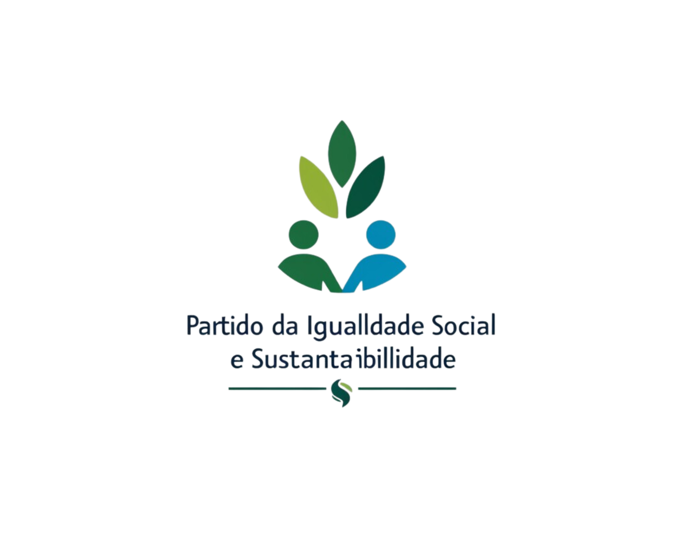

Vote no PISS,
Por um Brasil justo, igualitário e sustentável
PROPOSTAS:
- Promoção do Pleno Emprego e Valorização do Trabalho: Revogar reformas trabalhistas que precarizam o trabalho e criar novas legislações que fortaleçam os direitos dos trabalhadores.
- Desenvolvimento Sustentável e Proteção Ambiental: Fortalecer políticas de preservação ambiental com foco na proteção da Amazônia, Mata Atlântica e Cerrado.
- Direitos Humanos e Igualdade Social: Implementar políticas públicas de combate ao racismo, à discriminação de gênero e à LGBTQIA+fobia, além de fortalecer a Lei Maria da Penha.
OBJETIVO:
O partido nasce com o compromisso de criar uma sociedade onde a justiça social e a sustentabilidade caminham juntas. Inspirado pelos princípios do socialismo democrático e trabalhismo, busca valorizar o trabalho e garantir igualdade de oportunidades para todos os cidadãos. Sua missão é lutar para reduzir desigualdades econômicas, raciais e de gênero, promovendo o acesso igualitário à educação, saúde e moradia digna.
A preservação do meio ambiente é um ponto central. O partido acredita que o desenvolvimento sustentável depende da proteção dos recursos naturais e, por isso, apoia políticas de transição energética, preservação da biodiversidade e combate às mudanças climáticas.
